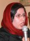

|
|
|
Browsing
Contact Us |
Campaigners |
Face to Face |
Tribune |
Interview |
News |
On the Web |
One Million |
Report
Farsi | Français | German | Italian | Spanish | العربية Also in this section
|
 Focus on the Campaigner: Somayeh RashidiInterview by: Sussan Tahmasebi Wednesday 8 October 2008
I am 23 years old. I earned my Bachelor of Arts Degree in Sociology from Alameh Tabatabaie University. Because of my sensitivities to women’s issues and my ideas on the status of women, before entering university, I was often referred to as a feminist. I didn’t really know what the term meant. I had an idea about feminism and thought that feminists believed that women are superior to men. As such, I didn’t like very much the fact that people referred to me as a feminist. After entering the University, and especially given the fact that I was studying sociology, I had the opportunity to learn more about the concept of feminism and read feminist theory. I should also mention that our university offers women’s studies, so in general there is great sensitivity and awareness about feminism and women’s issues among the students and the faculty as well. After entering university, I joined student groups. Because of discriminations against women in the student groups at university, became even more sensitive to women’s issues and discrimination against women. As a result, I took up activities and positions, which again caused people to label me as a feminist. For example, I would wear a colored scarf, instead of the usual dark headscarves that female students wore to university. I also started writing about women’s issues and became active in fighting sex segregation in the University’s cafeteria. I started participating in and organizing study groups dedicated to women’s issues and organizing workshops. I developed relations with professors teaching subjects from a feminist perspective or addressing women’s status. I also participated in student protests, especially those objecting to discrimination against women. At the same time, I connected with other students who were active in the women’s movement. Through these individuals I found out about protests and rallies commemorating international women’s day and I took part in these events, as well as other events addressing women’s issues. Along with other students active on women’s issues at the University we decided to set up an organization addressing women’s issues. Are you still active in this student organization? No. With the election of President Ahmadinejad, and the change in policies, and the appointment of a new University Chancellor, the organization was annulled by university officials. In fact, I was called into the disciplinary committee of the university on several occasions in relation to my activities in this organization. So what did you do then? Did you limit your activities on women’s issues? No. In 2004, I had the opportunity to connect with Hastia Andish, a women’s NGO and started cooperating with this group. I attended several meetings and participated in some programs, like the program promoting awareness of HIV/AIDs. I joined the organization and am still active in Hastia Andish. But I should say that after June 2006, and the women’s protest objecting to discriminatory laws which was staged in Haft-e Tir Square, and because of my other activities in support of women’s rights, I was suspended from university for a term. So, how did you become involved with the Campaign? Was it through the protest in Haft-e Tir Square? Members of Hastia Andish actively participated in the planning and implementation of both protests in support of women’s rights—in June 2005 in front of Tehran University and in 2006 in Hafte Tir Square. After the protest in Hafte Tir Square, I returned to my home city of Mashad. The universities were closed and we were on break. But my colleagues at Hastia Andish told me about the Campaign. When I returned to Tehran in September for the start of the University term, I also started my activities in the Campaign and became an active member. Through my activities at Hastia Andish, I had gained training experience, so I joined the Education Committee of the Campaign. Afterwards, I also joined the Volunteer Committee as well and was a member of this committee for a few months. Currently I am only active in the Education Committee. You have experience working on women’s issues in different settings, at the university, in your NGO, Hastia Andish and also in the Campaign. Does the Campaign provide a different environment for activism, than what you had experienced in the past? Within the university setting, if you want to be active on social issues, you have to conduct your activities through a formal student organization. To be identified as a legitimate social activist within the University setting and among your peers, you have to be introduced and mentored by students who are better known, famous in some way. Otherwise your work and activities and your ideas don’t get much attention. The structure for student activism in the university environment has improved considerably since that time, especially with increased activism of female students, but in general the structure remains a male–oriented structure. Within Hastia, I experienced a feminist organization and a feminist structure. But still Hastia is an organization and you have to abide by certain rules and conform to certain structures. For example, you have be active within the organization for over six months before being eligible to stand for election for the central council (the decision making body of the NGO). But in the Campaign, all you need to do is to accept the goals of the movement. It doesn’t matter how famous you are, or when you entered the movement, or even how capable and experienced you are. Everyone is valued at the same level and everyone has the same weight. The social environment prior to the start of the Campaign was much more open. It was the reform period and Mr. Khatami was president. In other words, there was much more opportunity to engage in social activities and much more readiness for such type of activities. But the women’s movement and women’s organizations were still very young at that point. Women’s groups and NGOs had only recently taken on formal shapes and were operating as official organizations. This was a new experience for women’s rights activists. During that period there was not much discussion on the issues we face today, such as working in a crisis situation or paying a price for activism for women’s rights. There was no need to consider these issues during that period. But the start of the Campaign coincided with the closure of the public space and a more conservative social environment. Through the Campaign and because of the social characteristics of the time at which it was launched, activists started discussing issues and preparing themselves for working in a crisis and security oriented situation. Through this experience women’s rights activists also learned that it does not matter whether you are working in a crisis and security oriented environment. What we have learned through our experience in the Campaign is that our goal and our demands are the most important factors and that we need to focus on our goals more than other factors. Working in the campaign has taught many activists not to fear the consequences of their activism and the price they have to pay. In other words, their belief in the Campaign, has prepared to pay a price for their demands. It also has taught activists how to continue with their work under difficult circumstances. What has been most important for me is the fact that the Campaign has created a space where women from different backgrounds and with different perspectives can work together and build solidarity toward the achievement of common goals. Thanks Somayeh for your time. |